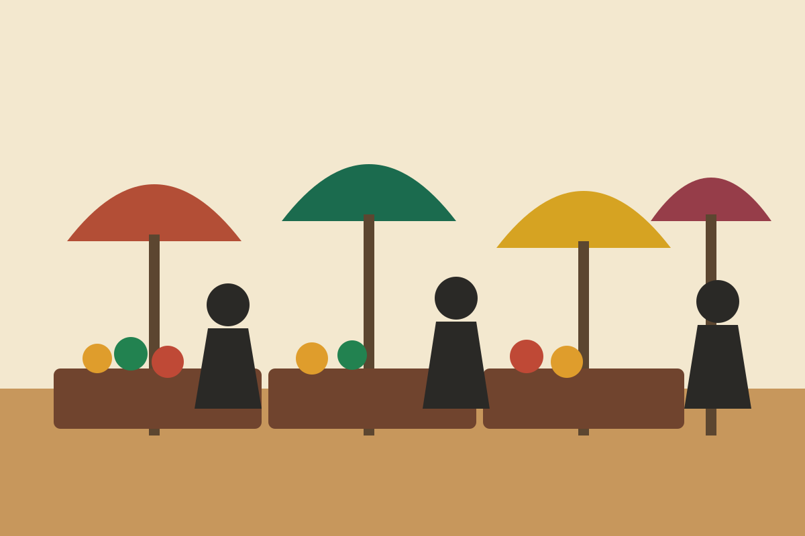
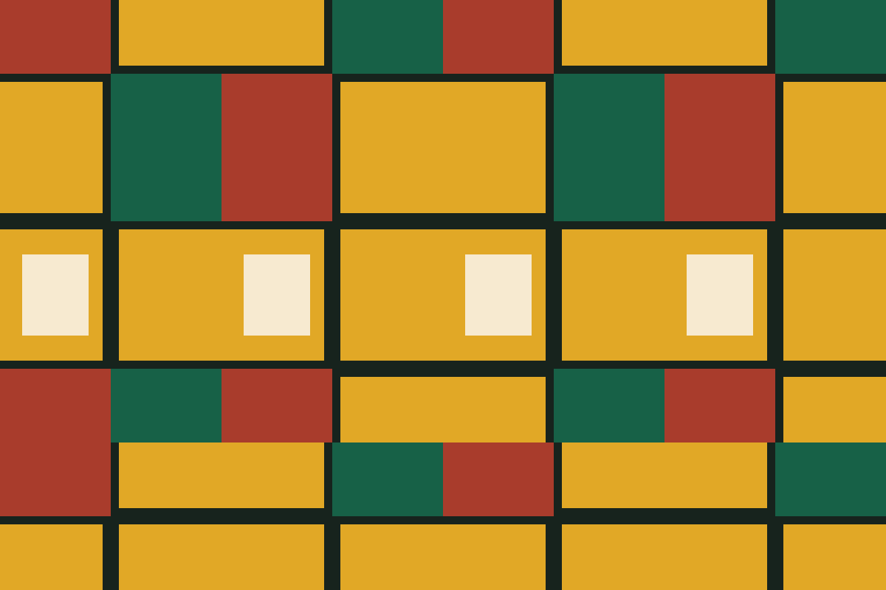

Use the right hand
Give or receive money, food and other items with the right hand when possible, especially in formal interactions.
Culture guide
Customs differ by community and setting. The safest approach is to greet people, observe local practice and ask when you are unsure.
Greetings and conversation
A greeting usually comes before a request. In a shop, home, office or roadside conversation, a short “good morning” or “good afternoon” helps establish courtesy. English is widely used, while Twi, Ga, Ewe, Dagbani and many other Ghanaian languages are part of daily life.
A visitor does not need to perform a language perfectly. A careful attempt and a willingness to listen are enough.

Everyday etiquette
These points are useful starting places, but local instructions take priority.
Give or receive money, food and other items with the right hand when possible, especially in formal interactions.
Get permission before photographing a person, their work, a ceremony or a close view of a market stall.
Beachwear belongs at the beach. Religious sites, traditional spaces and formal visits call for modest clothing.

Craft and meaning
Kente and adinkra are not simply patterns. Colours, motifs and production methods can carry specific associations. Ask the maker or seller about an item rather than assigning a meaning from a social media caption.
When possible, buy directly from a workshop or a seller who can explain where the piece came from. Fair questions about material, method and price show genuine interest in the work.
A respectful visit
Read about the place, check access rules and carry suitable clothing. Book community or heritage tours through recognised local contacts.
Follow the guide’s instructions, keep noise low where appropriate and do not touch artefacts or enter restricted areas.
Credit artists and locations accurately when sharing images. Do not post a person’s name or close portrait without permission.